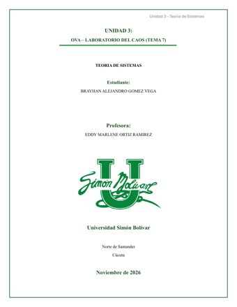

Autor del OVA · Proyecto 7
Teoría General de Sistemas
Créditos
Caos en los sistemas
Video narrado en español. Dos estados iniciales casi iguales muestran cómo el caos limita la capacidad de predecir un sistema.
Abrir MP4 · Probar el simulador
Leer la transcripción
En un sistema determinista, el estado actual y la regla determinan el estado siguiente. Aun así, el futuro puede ser difícil de predecir si conocemos el estado inicial con poca precisión.
Probemos el mapa logístico. Las dos curvas usan el mismo parámetro, erre igual a tres coma nueve. Los estados iniciales difieren en una diezmilésima. Al principio las curvas casi se superponen. Después se separan.
Si cambiamos erre a tres coma dos, la trayectoria termina alternando entre dos valores. Con erre igual a tres coma nueve aparece una evolución irregular. La regla sigue siendo determinista.
En Teoría General de Sistemas, esto ayuda a entender los límites de una predicción. Cada estado se convierte en la entrada del paso siguiente. El caos determinista también puede observarse en un circuito real, como el de Chua. En el simulador puedes comparar ambos regímenes.
Elaboración propia del OVA. La explicación se basa en Campos (2002) y Campos Romero (1996).

FICHA TECNICA OVA BRAYHAN
Documento del proyecto · PDF · 7 páginas
Referencias
- Campos, D. (2002). Determinismo, caos e impredictibilidad. Revista de la Academia Colombiana de Ciencias Exactas, Físicas y Naturales, 26(98), 85–103. DOI
- Campos Romero, D. (1996). Modelo logístico: Un paradigma en la teoría del caos. Revista de la Academia Colombiana de Ciencias Exactas, Físicas y Naturales, 20(78), 503–518. DOI
- Herrera Díaz, L. F., & Conde, A. (2001). Caos, fluidos y flujos. Ingeniería e Investigación, (48), 29–39. DOI
- Lombardi, O. (2001). La teoría del caos y sus problemas epistemológicos. Revista de Filosofía, 57, 91–109. DOI
- Rodríguez Devis, J. M. (2002). Las organizaciones complejas. Ingeniería e Investigación, (50), 90–103. DOI
Recursos audiovisuales
El video narrado y las dos animaciones se produjeron para este OVA. Las gráficas se calcularon con el mapa logístico. La narración se creó con síntesis de voz local en español. El retrato y el logo institucional fueron aportados por el estudiante.
Herramientas
El OVA usa HTML, CSS y JavaScript. Se usó OpenAI Codex como apoyo para redactar y programar. Las gráficas de los videos se crearon con Python.